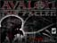
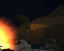
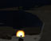
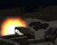
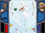
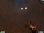
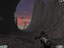

Click on images to open full size view.
Avalon: The Fallen
Working with the team from Anger Issues Interactive, I assisted with the initial concepts, level design and audio design of this project.
VRS Military Internship
  Using a combination of Sony Sound Forge 9.0 and Reason 4.0, I created the sounds and music for this game project. I also utilize the Vizard engine to place the sounds in the game world to create a genuine and realistic military experince. This project was made in collaboration with several Qantm College students and VR Solutions.
Click here see the demo clip for the project!

Operation Eagle Scream
Created over twelve weeks, Operation Eagle Scream was made in collaboration with a number of Qantm College students.
Operation Eagle Scream is a Ikaruga-inspired shooter that follows the journey of Johnny Stars'n'Stripes as he defeats the evil Atlantean King Poseidon. I held the position of Project Manager for this project.
 Metroid Prime: Zero Mission
Made in the style of Metroid Prime, this level was made using Unreal Engine 3.
The level follows from a section of Metroid: Zero Mission, where Samus has crash landed on Zebes. Seeing the nearby space pirate mothership, she must travel there if she is to ever escape Zebes. While Metroid: Zero Mission covers what happened once she was at the mothership, this level covers her quest to the ship.
SpaceShot
Created using DarkBASIC Pro, this is a simple shooter game I made over the course of three weeks.
The game is aimed at being a modern testament to the old japanese shooter genre, where the game gets continually harder until the player is defeated.